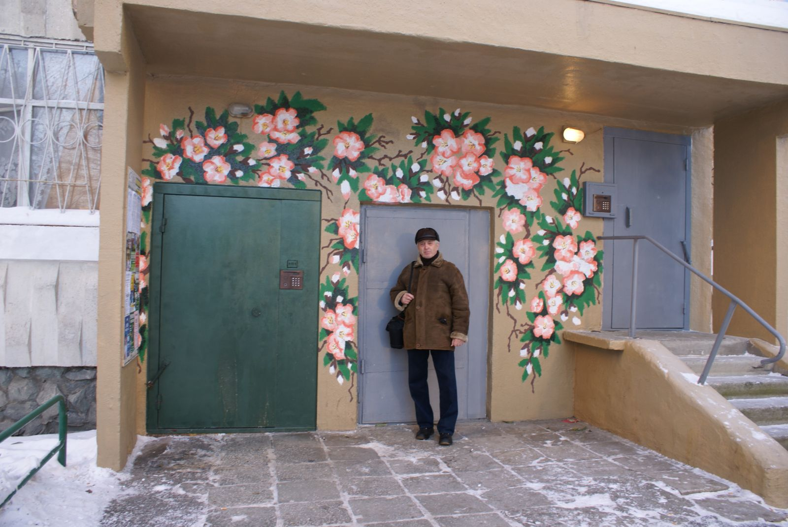

Первые ласточки уюта

В первых числах сентября праздники дворов прошли для жителей трех многоквартирных домов. Постояльцы домов № 66 и 70 по улице Амундсена и дома № 6а по улице Денисова–Уральского отметили окончание преображения их придомовой территории в рамках федерального проекта «Формирование современной городской среды».
Благоустройство
В Екатеринбурге в этом году в данной общероссийской правительственной программе участвует 57 дворов, причем 9 из них – это Ленинский район. В прошлом году, когда о проекте по созданию комфорта и уюта во дворах стало только известно, люди отнеслись к нему, как, впрочем, зачастую ко всему новому, с недоверием и подавали заявки крайне неактивно. На весь наш многомиллионный город было оформлено лишь 14 заявок. Однако те придомовые территории, где прошло благоустройство в 2017 году, в этом году стали примером того, что бояться перемен к лучшему все же не стоит.
Прошлый год показал, что федеральный проект «Формирование современной городской среды»
важен и нужен жителям как Екатеринбурга, так и Ленинского района: люди сами активно включились в
процесс его реализации, проявляя активность как при подаче заявок, так и при контроле качества
выполняемых работ.
Так жители дома 66 на Амундсена за участие в проекте проголосовали всего за неделю
– такие сроки принятия серьезного и единодушного решения можно назвать рекордными.
По желанию собственников в каждом дворе могут быть добавлены дополнительные элементы благоустройства – зоны рекреации, новые парковочные места, детские и спортивные площадки и так далее. Срок окончания всех работ по благоустройству в Екатеринбурге – 1 октября нынешнего года.
Секрет молодости

Попробуйте прямо сейчас выполнить небольшое упражнение: встаньте прямо, ноги вместе и попытайтесь ладонями достать до пола. Если не дотянулись, то сейчас мы вам расскажем, как вернуть суставам гибкость.
Спорт
Бабушки и дедушки, которых можно встретить каждое утро на центральной аллее в парке Чкалова, молодым фору дадут. В свои 70 лет они без проблем дотягиваются ладонями до земли, демонстрируя гибкость, что, к слову, повторить сможет не каждый офисный работник 30–40 лет.
Таких успехов пожилые люди добились благодаря регулярным занятиям специальной зарядкой. Комплексом простых физических упражнений местные жители почетного возраста будто бы заряжаются молодостью, энергией и здоровьем. Наверное, именно поэтому те, кто в любую погоду по утрам приходит в парк, ласково называют сами себя «зарядочниками» и «зарядочницами».
Физкультминутки в парке Чкалова начали проводить с мая 2015 года. Зимой на занятия приходит человек 20,
по весне число желающих присоединиться к ЗОЖ вырастает в разы.
Где и когда. Занятия проходят с 10.00 утра с понедельника по пятницу. Место всречи –
центральная аллея парка им.Чкалова.
Форма одежды. Одеваться стоит по погоде.
Предпочтение лучше отдавать спортивной одежде или удобным вещам, не сковывающим движения.
Кому подходит. Зарядка,направленнаяна гибкость суставов и улучшение метаболизма, по словам
тренеров, не имеет возрастных ограничений.
Яркий дом

Вместо грузового лифта – подводное царство, на месте пассажирского подъемника - джунгли с яркими попугаями, а на выходе в подъезд всех жителей и гостей встречает добродушный спаниэль.
Добрососедство
Так постояльцы дома №14 по ул. Решетникова борются с привычной реальностью. Типовую высотку они начали превращать в произведение искусства: тут над настенными картинами работает профессиональный художник.
Идея сделать краше единственный подъезд пришла жильцам чуть больше года назад, тогда же на крыльце многоквартирного дома «расцвела» сакура.

Сегодня тут появились стриж и сорока, которая, по словам председателя МКД Александра Николаевича Силачева, приносит для жителей исключительно хорошие новости. Впрочем, больше всего старший по дому гордится грузовым лифтом. Для расписанных в нем стен он даже придумал свою легенду.
Этот лифт – подводное царство, в котором живет Ихтиандр. Если перед тем как зайти сюда, протянуть
руку и позвать его, поздороваться с ним, он обязательно ответит. И подарит вот такие жемчужины, поднятые
со дна моря или океана
– на этих словах Александр Николаевич, словно настоящий фокусник, показывает
на ладони огромные перламутровые бусины. По его словам, истории про появление в лифтах глубоководных рыб и
цветастых попугаев каждый раз с восторгом слушают дети.